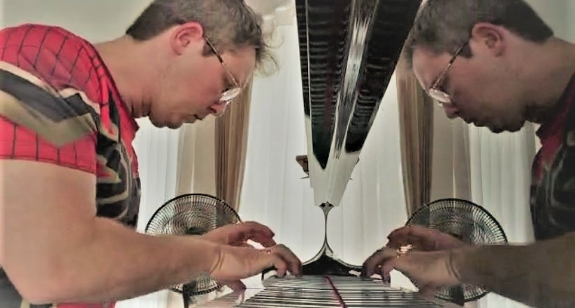

Igor Paim
Sobre
Formações
Projetos e Trabalhos sociais
Hobby
O QUE GOSTA DE FAZER
Seu hobbie é tocar piano sendo apaixonado pelo contato com a música clássica. Também gosta muito de ler além das coisas triviais(cinema, estar com a familia, animais de estimação).
